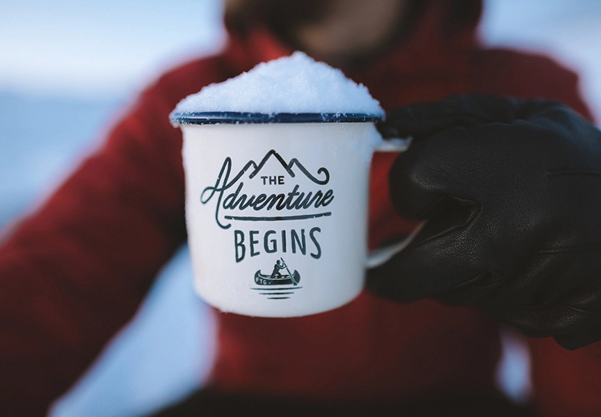
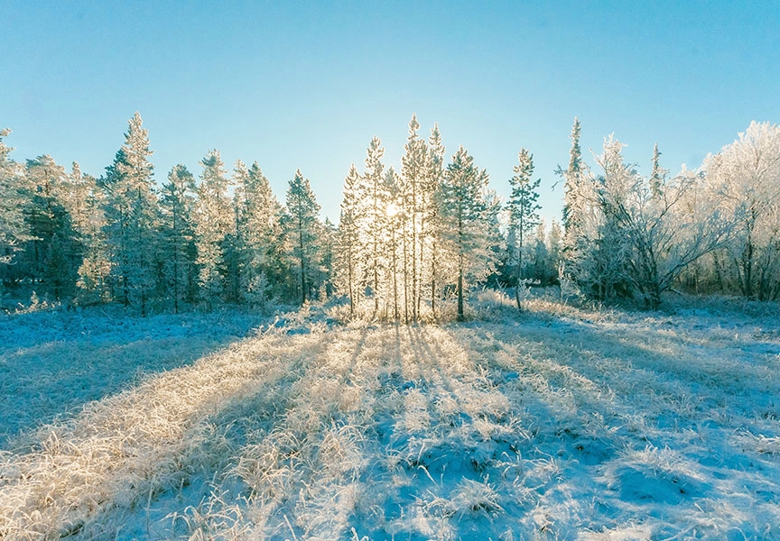

When winter rolls around many photography enthusiasts pack up their gear for the season. The days are drab, the weather is miserable, and there isn't anything interesting to photograph. Or is there?
Photography is all about finding the beauty, adventure, excitement, emotion, etc in the everyday. Who decided these moments are limited to spring, summer, and fall?
We are of the opinion that you can capture amazing images whatever the weather. However, you do have to be prepared for shooting conditions. Plus, you might have to look harder to find the beauty you want to capture.
Protect your gear and yourself
Before we get started on what to shoot, let’s talk about the gear you’ll need. We don’t want you to get all excited and head out for a day of shooting only to end up damaging your camera because you didn’t protect it properly.
When shooting in winter, don’t forget to bring along a zip-up freezer bag. You’ll need this simple piece of equipment to keep your camera safe from its sworn enemy — moisture.Place your camera inside a sealed plastic bag while you’re still outside. This will trap a little cold air around your camera so that it warms up more slowly. Plus, moisture can’t get through the plastic to condensate directly on the camera.
If it’s actively snowing, it’s important to keep your camera covered in some capacity. Snow, like rain, will get your camera wet. If your camera does get wet, don’t wipe it as this can push moisture into the cracks. Instead, leave it sitting on a towel to air dry for a few hours.
Snow scenes
Snow scenes can be gorgeous, ethereal, and majestic (among other attributes). No doubt you’ve seen some amazing landscape images or portraits captured in the snow.
However, if you’ve ever tried to capture one of those photographs, you may have been underwhelmed by the results. Though the day may have been bright, your photos may have turned out rather dark and drab and the snow looks almost gray.
What on earth!?
Well, cameras these days are pretty smart but sometimes they need a little help. On a snowy day, the light is bouncing all over the place and there are reflections galore. The camera’s metering can get confused and turn out images that are somewhat underexposed. That’s what gives the snow its dirty appearance.
To remedy this, just overexpose slightly when choosing manual settings. If you haven’t ventured too deep into manual settings yet, this is a good time to start!
Pro tip: get to your shooting location early in the day to avoid other people leaving footprints all over your scene.
What if there isn’t any snow? Try darkening down your exposure for a more moody ambiance. By embracing the drabness of the scene, you can create some intriguing images even with a bleak winter scene.
Portraits in the snow
Landscapes aren’t the only thing you can shoot outdoors in the winter. If you have some models that don’t mind the cold, it’s so much fun to take portraits in the snow!
Kids and adults alike look super cute all bundled up in hats and scarves and their colorful clothing is a beautiful contrast with the white snow. Some daring folks might even be brave enough to pose in the snow in a stunning gown or dress clothes. Bring hand warmers and hot cocoa to make it more festive, fun, and a tiny bit warmer.
What if it’s snowing while you’re taking pictures? Take advantage! Use the burst mode to take multiple shots and give yourself a variety of images to choose from.
To get those big, blurry snowflakes that add magic to your image, shoot with a long lens (ideally 200mm or longer). Close down the aperture as much as you can, around f/4.5 – f6.3.
If you want blurry snow trails from the falling flakes, set your camera on a tripod and slow down the shutter speed.
Sunrise and sunset
Sunrises and sunsets are always beautiful to photograph but they are especially magical in winter over a snow-kissed scene. As a bonus, you won’t have to get up so early to catch the sunrise since the sun sleeps in during the winter months.
However, it will be especially cold so be sure to bundle up well before heading out. Try closing down your aperture really small (about f/16 – f/22) to give the sun gorgeous sunburst rays as it peeks over the horizon. However, it will be especially cold so be sure to bundle up well before heading out. Try closing down your aperture really small (about f/16 – f/22) to give the sun gorgeous sunburst rays as it peeks over the horizon.
There will be a lot of bright light from the sun and strong reflections from the snow that will confuse your camera. We recommend using manual mode and choosing your own settings for best results.
Leave a comment